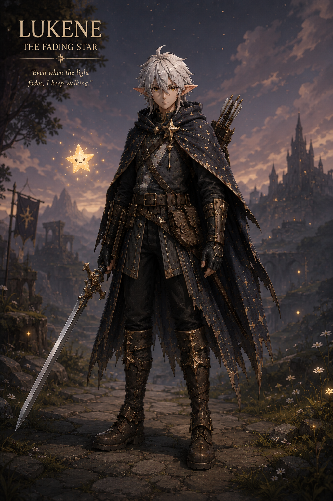

PROJECT DEEP DIVE
The Fading Star
The sword isn't just a sword. The journey isn't just a journey. The darkness isn't just darkness. The fading star isn't just magic.
A 2D adventure/platformer I'm just starting to prototype in Unity — my step up from FloopyChicken, meant to teach me multiple scenes, dialogue, inventory, abilities, enemies, NPCs, saving/loading, animation, and real level design.
OVERVIEW
What This Project Is
The fading star game is supposed to be a story driven by fantasy adventure game more pointing at themes linke loneliness, memory, connection, and learning that even a fading star can still guide someone through the darkness. You play as Lukene, a young wandering warrior with goblin ears. He travels through a beautiful but dying world, carring a fragment of celestial light that is gradually disappearing Lukene is not like a traditional chosen hero. He doesn't want to save the world, neither he understand why he's there. But he know that the light inside him is fading, and that if it dissapears forever, something important will be lost.
STORY IDEA
The real story behind the Fading star
When you help someone, it becomes brighter. When you're overwhelmed, pieces of stardust fall from it.
This fantasy type story is basically a metaphor for real life. Lukene starys the game believing he has to travel alone. He doesn't hate people but he got used to:
- Dealing with problems himself
- Hiding when he's struggling
- Feeling like nobody would really understand
- Helping other people while ignoring himself
- Leaving before someone can leave him
- Carrying memories that hurt
- Wondering whether he is actually important to anyone
So he became a traveller He keeps moving because stopping means having
to think about everything he's running from.
THE DARKNESS
The Darkness isn't depression. It-s disconnection from other people,
your memories, your identity, emotions...
The WHO describes loneliness as the painful gap between the
connections someone has and the connections they want or need. It also
notes that loneliness and social isolation can affect mental health
and wellbeing.
MECHANICS
Planned Systems
A running list of the systems this project is meant to teach me, roughly in the order I plan to tackle them.
The Star (Core Mechanic)
The star's glow reacts to the player's actions dimming under pressure, brightening when they help someone.
Multiple Scenes
Moving between areas/levels and loading them cleanly in Unity.
Dialogue
A basic dialogue system for talking to NPCs and telling the story.
Inventory
Picking up, storing, and using items found in the world.
Abilities
Player abilities that unlock as the story and the star progress.
Enemies & NPCs
Basic enemy behavior, plus NPCs to talk to and help.
Saving / Loading
Persisting player progress between sessions.
Animation & Level Design
Character animation and actually designing levels, instead of a single endless loop like FloopyChicken.
AI USE
Where AI Fits In
I'm planning or used
SCREENSHOTS
Models & Concept Art
Early looks at the character, world, and prototype — this section will grow as the project moves past the concept phase.

Character Concept
Early concept art for the main character and the star.

Character Concept (FULL)
Early concept art for the main character front view

Prototype
First look at the prototype in Unity.

World & Level Sketches
Early sketches of the world and level layout ideas.
DEV LOG
Time Per Part
A rough breakdown of time spent on each part of the project so far.
| Part | Time |
|---|---|
| Concept & Story | — |
| Character & World Design | — |
| Prototyping | — |
| Programming | — |
| Art / Assets | — |
| Total | — |